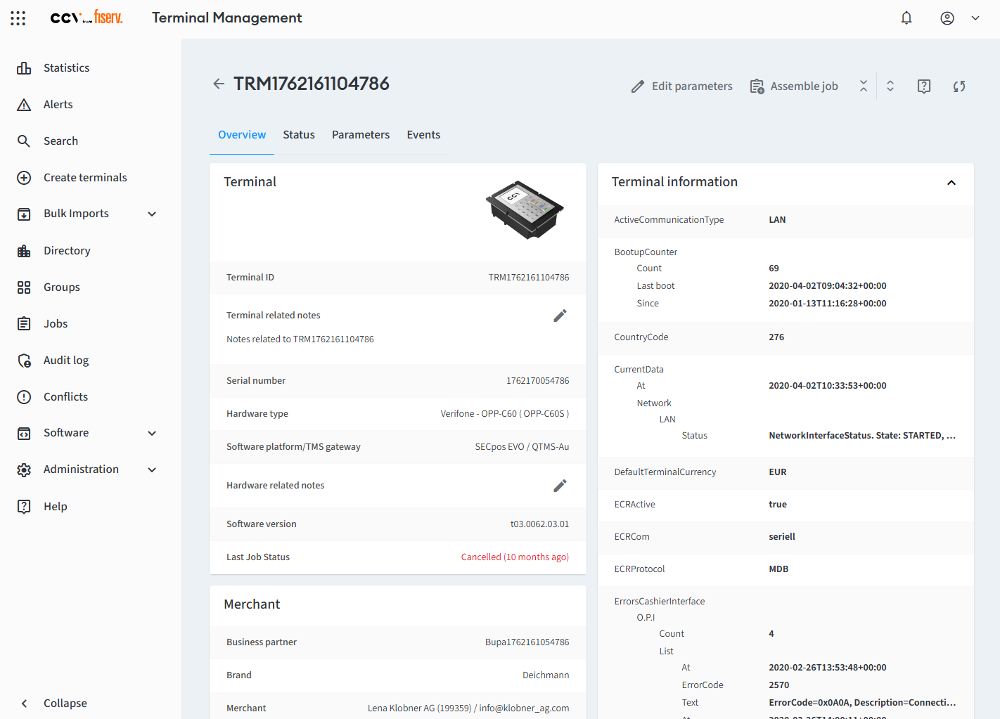
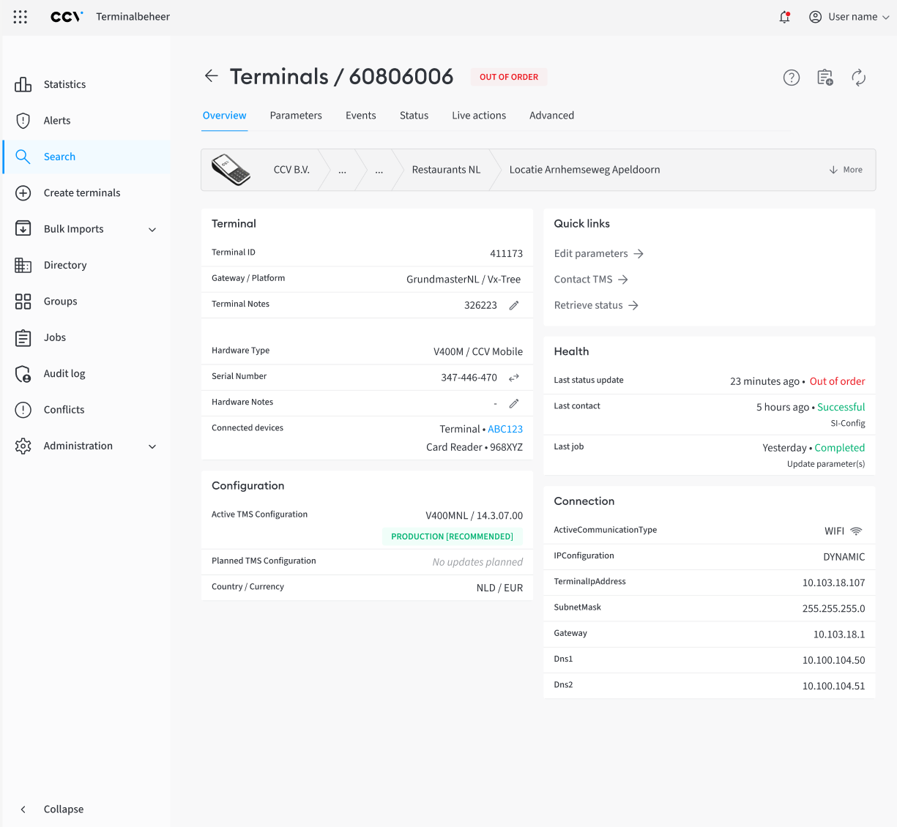
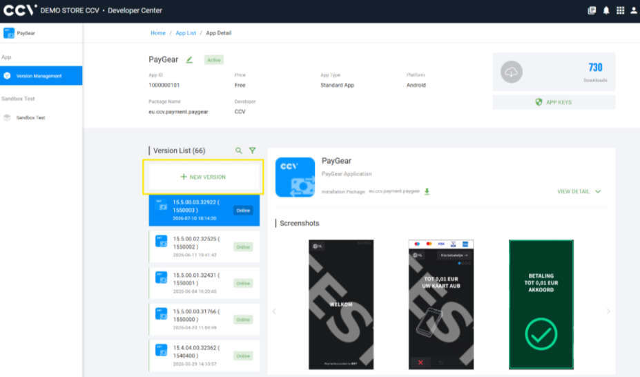
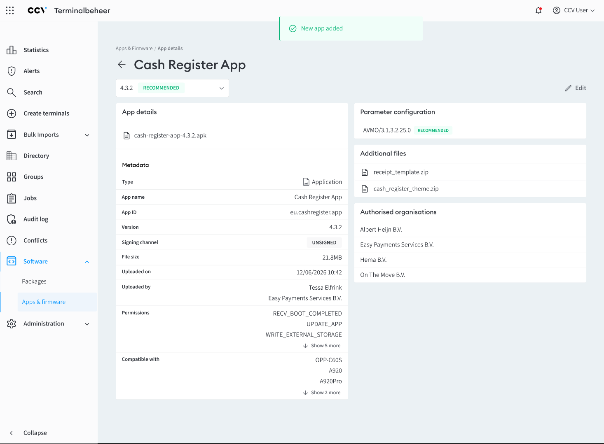

Beheerpagina pinautomaat overzichtelijker maken
-
1. Probleem
De beheerpagina voor een pinautomaat was niet overzichtelijk. Gebruikers konden de belangrijkste informatie niet in 1 oogopslag zien. Er was veel afleiding, en de vele technische informatie maakte de pagina voor sommige gebruikers intimiderend.

-
2. Proces
Aan gebruikers hebben we gevraagd:
- Wat doe je als eerste wanneer je op deze pagina komt?
- Waar zoek je naar? Wat wil je hier bereiken?
- Welke data heb je daarvoor nodig, en welke niet?
-
3. Oplossing
Ik heb een nieuw design gemaakt voor deze pagina. Ik heb de informatie logischer ingedeeld. De meest belangrijke data is nu in 1 oogopslag te zien. Een "Quick links" blokje maakt het uitvoeren van belangrijke acties eenvoudiger. De meer technische informatie is verplaatst naar een "Advanced" tabje.

Context: beheer- en configuratieplatform voor payment terminalsApps uploaden en beheren
-
1. Probleem
Gebruikers moeten apps en andere software die op terminals draait kunnen beheren. Dit moesten ze doen in een losstaande applicatie, die niet voor iedereen toegankelijk was. We wilden het graag mogelijk maken om dit te doen op dezelfde plek als waar de terminals zelf beheerd worden.

-
2. Proces
Aan gebruikers hebben we gevraagd:
- Welke typen software moet je kunnen beheren?
- Welke data moet je hier kunnen toevoegen? Welke data moet je later nog kunnen wijzigen, en welke niet?
- Wat doe je als je een nieuwe versie van een app wil publiceren?
-
3. Oplossing
Ik heb designs gemaakt voor het kunnen uploaden, beheren en inzien van apps en firmware in ons eigen systeem. Daarbij heb ik gefocust op het creëren van rust en overzicht. De keten van het uploaden en configureren van versies van apps en firmware, tot het uitrollen daarvan naar een terminal, kan nu op 1 plek beheerd worden.

-